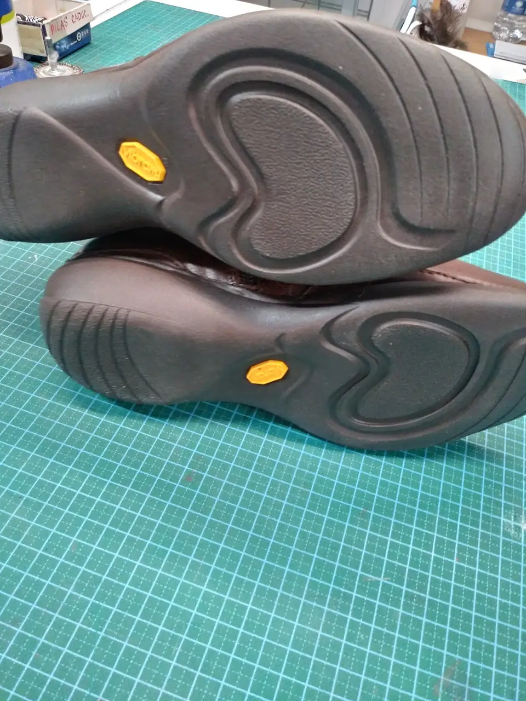
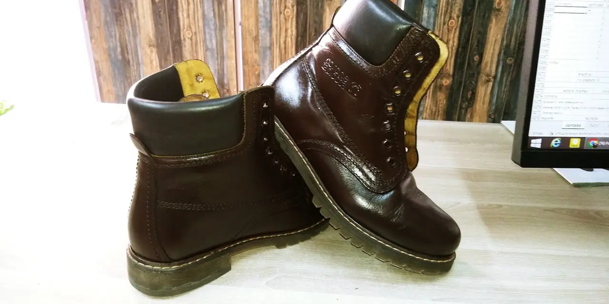
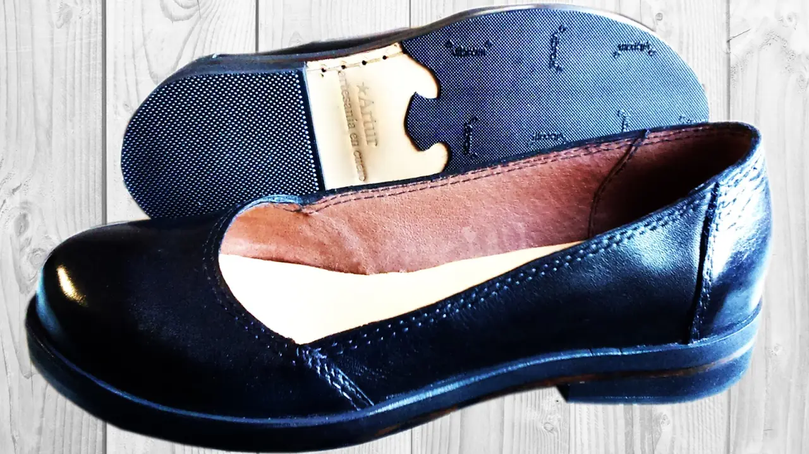
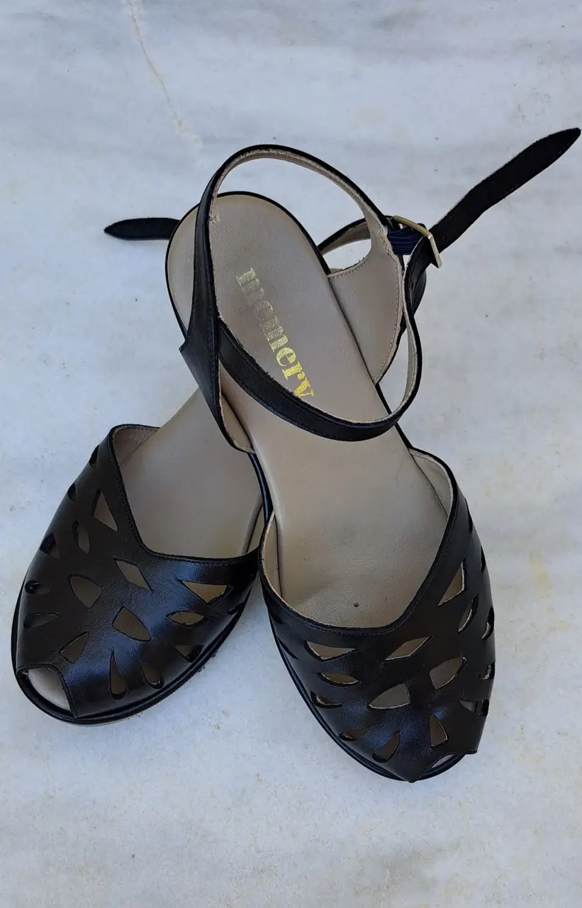
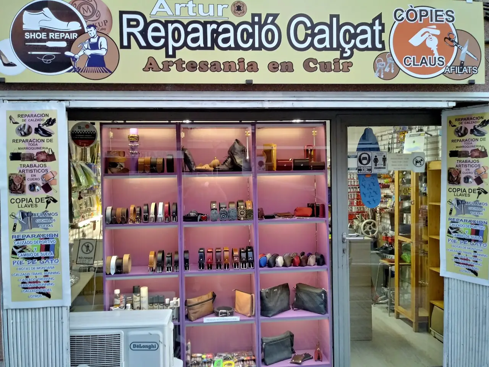
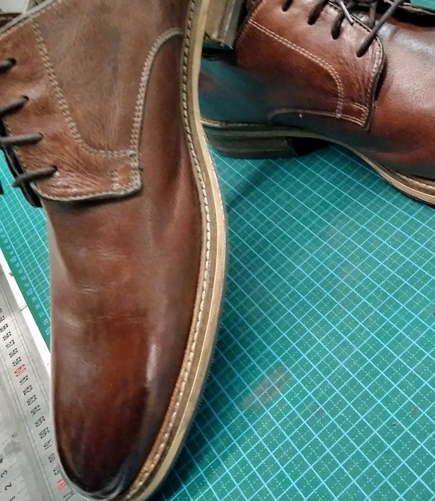

Suelas y tacones
Cambiamos suelas y tapas, también suelas Vibram, para que el calzado vuelva a durar.
Carrer Bonestar, 6 · Cornellà
Reparamos calzado y trabajamos el cuero a mano: suelas, tacones, botas, plantillas y accesorios de piel hechos en el taller.
Así de fácil
Antes de tirar unos zapatos, enséñanoslos.

Cambiamos suelas y tapas, también suelas Vibram, para que el calzado vuelva a durar.

Arreglamos botas abiertas, descosidas o con la suela gastada.

Costuras, plantillas y cuidado del cuero.

Tiras, hebillas y suelas de sandalias y calzado de verano.
Bolsos y accesorios de piel trabajados a mano en el taller.
Hacemos copias de llaves en el momento.

El taller
Estamos en el Carrer Bonestar, 6, en Cornellà, de lunes a viernes mañana y tarde y los sábados por la mañana.
Nuestros clientes nos dan un 4,6 en Google. Lo que más comentan: botas y suelas que parecían para tirar y vuelven como nuevas, y los artículos de piel hechos a mano.
Pregúntanos por tu calzadoCalzado que ha pasado por el taller.

4,6/5
54 opiniones en Google. Esto es lo que más se repite:
Depende del arreglo. Mándanos una foto por WhatsApp o pásate por el taller y te decimos el precio.
Muchas veces sí. Enséñanoslas antes de tirarlas y te decimos si vale la pena.
Lunes a viernes de 9:30 a 13:30 y de 17:00 a 20:00. Sábados de 10:30 a 13:30.
Carrer Bonestar, 6
08940 Cornellà de Llobregat (Barcelona)
Mándanos una foto por WhatsApp o pásate por el taller.